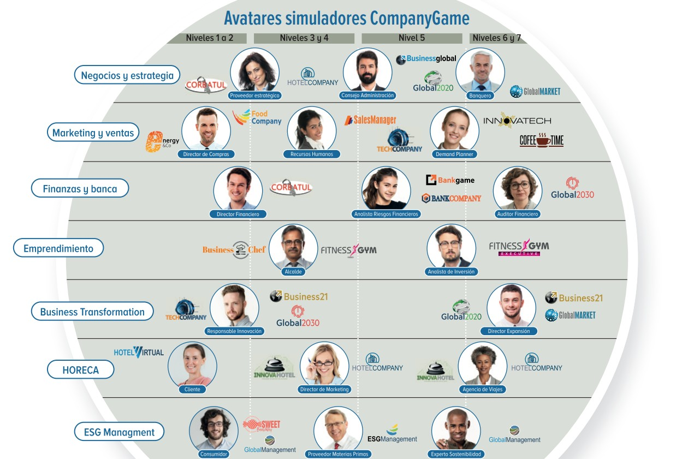

Simuladores para Ingeniería · USB
Mapeo curricular de la Facultad de Ingeniería
Revisamos los planes de estudio de los siete pregrados de la Facultad frente a nuestro portafolio — catálogo CompanyGame y SimProject — y verificamos cada encaje contra el contenido real de cada curso, no solo contra el nombre de la asignatura. 12 asignaturas pueden trabajarse hoy con un simulador, con 7 simuladores distintos a los que ya tienen acceso — concentradas entre cuarto y séptimo semestre, en seis de los siete programas. Esta presentación muestra exactamente cuáles son, programa por programa.
🎮 Cartelera de Simuladores
El portafolio CompanyGame y sus avatares de IA
CompanyGame ofrece 41 simuladores de negocio organizados por nivel de dificultad (1 a 7) y área de conocimiento. De ese catálogo, 6 simuladores ya tienen una asignatura donde encajan en la Facultad de Ingeniería: Business21, Focus, Corbatul, MilkFactory, FitnessGym y Coffee Time. La página siguiente los muestra junto a los avatares de IA con los que trabajan.


🤖 Avatares de IA — pendiente de archivo
Guarda la imagen de avatares como assets/avatares.png en la carpeta del proyecto y aparecerá aquí automáticamente, con el mismo estilo que la cartelera.
🚀 SimProject: el especialista en dirección de proyectos de ingeniería
El simulador con más recorrido de toda la Facultad — presente en cuatro de los seis programas con encaje confirmado
El portafolio que representamos para esta Facultad va más allá de la gestión general de empresa: SimProject, especializado en dirección de proyectos, es el simulador confirmado en 5 de las 12 asignaturas que se muestran en las fichas siguientes — el simulador más transversal de todo el mapeo.
SimProject
Simulador de dirección de proyectos: planeación, presupuesto, recursos, cronograma y riesgo, con las mismas decisiones que exige la ruta crítica de un proyecto real.
Aplica en: Gerencia de Proyectos de Ingeniería — el mismo encaje en Industrial (VI), Agroindustrial (VI) y Biológica (V) —, Gestión de Proyectos de Software (Sistemas, VII) y Gestión en Proyectos (Multimedia, VI).
🤝 Un solo proveedor, una sola implementación
Ya sea con un simulador del catálogo CompanyGame o con SimProject, la Facultad negocia con un único proveedor, capacita a sus docentes en una sola plataforma y tiene un solo equipo de acompañamiento — sin contratos ni curvas de aprendizaje distintas por cada asignatura que se sume al proyecto.
✅ Lo que ya se puede hacer hoy
12 asignaturas, verificadas una por una contra el contenido real del curso
Revisamos el plan de estudios de los siete pregrados de la Facultad y buscamos, para cada asignatura, el simulador de nuestro portafolio que mejor la acompaña — y luego verificamos cada encaje contra el contenido real del curso, no solo contra el nombre. Donde la evidencia no sostenía el encaje, se descartó. Lo que queda es una selección rigurosa, no una lista larga a toda costa.
12 asignaturas
Verificadas y confirmadas, repartidas en seis pregrados y concentradas entre cuarto y séptimo semestre.
7 de aplicación directa
El simulador cubre el núcleo de la asignatura: se usa sin modificar el temario ni el sistema de evaluación.
5 como apoyo al curso
El simulador aporta la operación viva y se integra a lo que el docente ya enseña. El docente conserva el control del curso.
7 simuladores
Entre el catálogo CompanyGame, con nivel N1 a N5, y el especializado SimProject.
🎓 Alcance por programa
Seis de los siete pregrados tienen ya una asignatura confirmada — las fichas siguientes las detallan una por una
El encaje confirmado se concentra entre cuarto y séptimo semestre — el tramo donde el estudiante empieza a tomar decisiones de gestión y proyecto.
| Programa | Asignaturas con simulador | Aplicación directa | Como apoyo al curso | Simuladores | Semestres |
|---|---|---|---|---|---|
| Ingeniería Industrial | 5 | 3 | 2 | 5 | 4 – 6 |
| Ingeniería de Sistemas | 2 | 1 | 1 | 2 | 7 |
| Ingeniería Agroindustrial | 2 | 1 | 1 | 2 | 4 – 6 |
| Ingeniería Biológica | 1 | 1 | 0 | 1 | 5 |
| Ingeniería Multimedia | 1 | 1 | 0 | 1 | 6 |
| Ingeniería Biomédica | 1 | 0 | 1 | 1 | 7 |
| Total Facultad | 12 | 7 | 5 | 7 | 4 – 7 |
Seis programas, listos para empezar
Seis de los siete programas tienen ya al menos una asignatura con simulador confirmado — el punto de partida para abrir la conversación en cada uno.
Concentrado en la mitad de la carrera
El encaje se concentra entre cuarto y séptimo semestre: el tramo donde el estudiante ya tiene las bases y empieza a decidir con criterio profesional.
Un solo proyecto, no seis
Los programas comparten asignaturas y simuladores — SimProject aparece en cuatro de los seis programas — así que la capacitación y el diseño se hacen una vez para varios programas a la vez.
🎓 Ingeniería Industrial
Ficha 1 de 6 · las asignaturas del programa que hoy pueden trabajarse con un simulador
✅ Encaje perfecto · 3
El simulador entra sin modificar el temario
| Sem. | Asignatura | Simulador |
|---|---|---|
| 5 | Gestión de Operaciones | MilkFactory N5 |
| 5 | Investigación de Mercados | Focus N5 |
| 6 | Gerencia de Proyectos de Ingeniería | SimProject |
🧩 Encaje parcial · 2
El simulador se ajusta al curso y el docente conserva el control
| Sem. | Asignatura | Simulador |
|---|---|---|
| 4 | Gestión Estratégica Organizacional | Business21 N3-4 |
| 4 | Ingeniería de Costos | Corbatul N3-4 |
🎓 Ingeniería de Sistemas
Ficha 2 de 6 · las asignaturas del programa que hoy pueden trabajarse con un simulador
✅ Encaje perfecto · 1
El simulador entra sin modificar el temario
| Sem. | Asignatura | Simulador |
|---|---|---|
| 7 | Gestión de Proyectos de Software | SimProject |
🧩 Encaje parcial · 1
El simulador se ajusta al curso y el docente conserva el control
| Sem. | Asignatura | Simulador |
|---|---|---|
| 7 | Cátedra de Emprendimiento | FitnessGym N3-4 |
🎓 Ingeniería Agroindustrial
Ficha 3 de 6 · las asignaturas del programa que hoy pueden trabajarse con un simulador
✅ Encaje perfecto · 1
El simulador entra sin modificar el temario
| Sem. | Asignatura | Simulador |
|---|---|---|
| 6 | Gerencia de Proyectos de Ingeniería | SimProject |
🧩 Encaje parcial · 1
El simulador se ajusta al curso y el docente conserva el control
| Sem. | Asignatura | Simulador |
|---|---|---|
| 4 | Mercadeo e Investigación de Mercados | Coffee Time N1-2 |
🎓 Ingeniería Biológica
Ficha 4 de 6 · las asignaturas del programa que hoy pueden trabajarse con un simulador
✅ Encaje perfecto · 1
El simulador entra sin modificar el temario
| Sem. | Asignatura | Simulador |
|---|---|---|
| 5 | Gerencia de Proyectos de Ingeniería | SimProject |
🎓 Ingeniería Multimedia
Ficha 5 de 6 · las asignaturas del programa que hoy pueden trabajarse con un simulador
✅ Encaje perfecto · 1
El simulador entra sin modificar el temario
| Sem. | Asignatura | Simulador |
|---|---|---|
| 6 | Gestión en Proyectos | SimProject |
🎓 Ingeniería Biomédica
Ficha 6 de 6 · las asignaturas del programa que hoy pueden trabajarse con un simulador
🧩 Encaje parcial · 1
El simulador se ajusta al curso y el docente conserva el control
| Sem. | Asignatura | Simulador |
|---|---|---|
| 7 | Valoración de Proyectos | Corbatul N3-4 |
🚀 Lo que viene: más allá del catálogo actual
Planeación y control de operaciones, y cadena de suministro
Además de las 12 asignaturas que ya tienen simulador, la línea de producción y operaciones de Industrial, Agroindustrial y Biológica quedó identificada como el mayor espacio de crecimiento del portafolio frente a esta Facultad. Para la cadena de suministro ya tenemos un simulador real; para la planeación y control de operaciones, desde Simuladores de Negocios Colombia podemos evaluar el desarrollo de un simulador construido a la medida.
Cadena de Suministro — GlobalChain
Ya disponible
Una cadena de varios eslabones con demanda variable, tiempos de entrega y costos de faltante: cantidad y momento de pedido, selección de proveedores, nivel de servicio y modo de transporte.
Para: Gestión Cadena Abastecimiento (Ingeniería Industrial), con relación directa también en Ingeniería Agroindustrial.
Simulador de Planeación y Control de Operaciones
En evaluación
Una planta con demanda variable: pronóstico, plan de producción, capacidad, inventarios y programación.
Para: Gestión de Operaciones, Investigación de Operaciones, Ingeniería de Métodos y Tiempos, Simulación de Procesos Discretos, Localización y Diseño de Plantas (Ing. Industrial); Procesos Agroindustriales I y II (Ing. Agroindustrial); Ingeniería de Procesos Biológicos I y II (Ing. Biológica) — 9 asignaturas en 3 programas.
🤝 Podemos construirlo con ustedes
Desde Simuladores de Negocios Colombia podemos evaluar, junto con la Facultad, el desarrollo del simulador de Planeación y Control de Operaciones. Es una capacidad real de nuestro equipo, no una promesa genérica — y el primer paso es tan simple como agendar esa conversación.
🎚️ Tres formas de llevar el simulador al curso
El simulador se ajusta al curso que el docente ya dicta — no al revés
| Modelo | Qué es | Aplica a | Duración | Peso en la nota | Rol del docente |
|---|---|---|---|---|---|
| A · El simulador es el curso | La partida ya trae la estructura del semestre; cada ronda cubre una unidad temática | Encaje perfecto | 8–10 semanas | 30–40 % | Guía la partida |
| B · El simulador es un módulo | Se inserta en las sesiones que el docente ya tiene programadas para su tema | Encaje parcial | 3–5 sesiones | 15–25 % | Activa el módulo |
| C · El simulador es la fuente de datos | No se corre competencia: se usan los reportes de una partida ya jugada como caso base del curso | Encaje parcial | 1–2 sesiones | 10–15 % | Recibe los reportes |
El docente guía la partida y acompaña a los equipos; el simulador aporta la estructura. Resultado: la experiencia formativa más completa y la evidencia de aprendizaje más rica, con el menor trabajo de diseño para el docente.
Basta con reservar 3 a 5 sesiones; la capacitación es breve. Resultado: aplicación práctica del concepto sin tocar el resto del curso. Es el punto de entrada habitual para un docente que nunca ha usado un simulador.
El docente no opera el simulador: solo recibe los reportes. Resultado: datos realistas, coherentes entre sí y generados por los propios estudiantes. Es la clave de la expansión: una partida ya corrida puede alimentar varias asignaturas sin trabajo adicional para nadie.
🎯 Evidencia de aprendizaje
Cada partida deja registro trazable — del tipo que la acreditación pide
Cada partida registra decisiones tomadas, resultados obtenidos y evolución entre rondas, de forma individual y por equipo. Es evidencia trazable que una evaluación tradicional rara vez produce con ese nivel de detalle.
| Simulador | Resultado de aprendizaje que evidencia | Evidencia evaluable |
|---|---|---|
| Business21 | Dirige una empresa de nivel intermedio con decisiones de precio, producción y mercado | Reporte de resultados por ronda + decisiones tomadas |
| Focus | Diseña, ejecuta e interpreta una investigación de mercados completa | Informe de investigación + decisión comercial sustentada |
| Corbatul | Diagnostica la situación financiera y decide inversión, financiación y capital de trabajo | Indicadores por ronda + memoria de justificación |
| MilkFactory | Planifica producción, capacidad y calidad bajo restricciones | Plan de operaciones + indicadores de planta |
| FitnessGym | Formula un plan de negocio viable y evalúa su sostenibilidad | Plan de negocio con proyección de flujos |
| Coffee Time | Formula un mix de marketing y anticipa la respuesta del mercado | Plan de mercadeo vs. participación obtenida |
| SimProject | Gestiona cronograma, presupuesto, recursos y riesgo de un proyecto con ruta crítica (PERT/CPM) | Cronograma actualizado + informe de desviaciones |
| GlobalChain | Coordina una cadena de suministro de varios eslabones bajo demanda variable e información incompleta | Plan de abastecimiento e inventarios + indicadores de servicio |
Tres competencias genéricas quedan cubiertas de paso
Razonamiento cuantitativo
Toda decisión del simulador se sustenta en datos: el estudiante lee, interpreta y proyecta cifras en cada ronda.
Comunicación escrita
El informe de decisiones y el debrief obligan a argumentar por escrito lo que el equipo decidió y por qué.
Competencias ciudadanas
Los dilemas de sostenibilidad y gobernanza ponen al equipo a resolver tensiones entre rentabilidad e impacto.
¡Gracias!
Facultad de Ingeniería · Universidad de San Buenaventura
Las 12 asignaturas están identificadas, con su simulador y su semestre. El siguiente paso es agendar una sesión con cada programa para elegir la asignatura piloto del semestre.